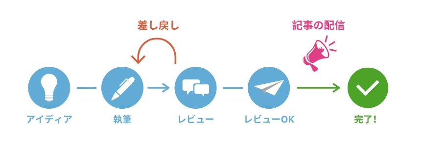
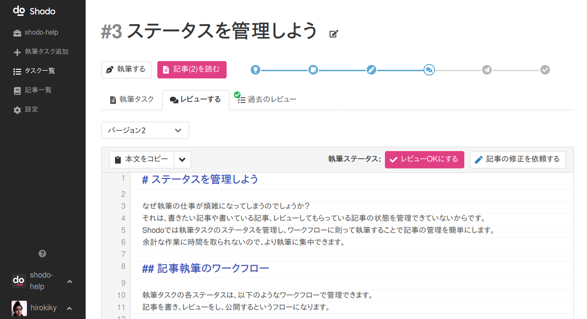

ステータスを管理しよう¶
なぜ執筆の仕事が煩雑になってしまうのでしょうか？ それは、書きたい記事や書いている記事、レビューしてもらっている記事の状態を管理できていないからです。 Shodoでは執筆タスクのステータスを管理し、ワークフローに則って執筆することで記事の管理を簡単にします。 余計な作業に時間を取られないので、より執筆に集中できます。
Shodoの執筆タスクには以下のステータスがあります。
| ステータス | 意味 |
| アイディア | 記事を執筆したいな、これを書きたいなという状態。 思いついたらとりあえずアイディアへ。 |
| 執筆待ち | 記事を執筆することが決まっている状態。単なるアイディアでなく、具体的にアサインされている人が執筆すべき状態。 |
| 執筆中 | 記事を実際に執筆している状態。 |
| レビュー待ち |
記事が一旦書き終わったのでレビューを待っている状態。 レビュアーはこの記事にレビューコメントをして、執筆中に差し戻すか、レビューOKに進めるかを選ぶ。 |
| レビューOK | 記事が書き終わって公開作業などの残タスク完了を待っている状態。アサインされている人が、Shodo以外の配信プラットフォーム上に記事を作成するべき状態。 |
| 完了 | 記事作成、配信プラットフォームでの記事作成が完了した状態。配信プラットフォーム上で予約投稿などができていればShodoの執筆タスクは完了にしても良い |
| 却下 | 当該の記事を書かないとした状態。 |
記事執筆のワークフロー¶
執筆タスクの各ステータスは、以下のようなワークフローで管理できます。 記事を書き、レビューをし、公開するというフローになります。

基本的にはShodoがステータスの変更をサジェストしてくれるので、執筆タスクを作成し、執筆、レビューと進めれば問題ありません。 もしステータスを手動で変更したいときは、タスクの詳細画面から変更できます。ステータスを手動で変更しても特にトラブルになることはありません。
書きたい記事があるときは？¶
まず、書きたい記事があるときは「アイディア」ステータスとして執筆タスクを作ると良いでしょう。 アイディアと他の（執筆中などの）記事を分けて管理できるので、気兼ねなく思いついたアイディアを執筆タスクとすると良いでしょう。
記事を書くことが決まれば「執筆待ち」とステータスを変更しましょう。 こうすることで「書きたい記事」と「書くことが決まったけど、まだ書いていない記事」を分けて管理できます。
レビューが終わったときは？¶
執筆された記事をレビューしたあとは、レビュー画面のボタンからステータスを変更できます。 レビューについては後のガイドラインで詳しく説明します。

記事を公開し終わったときは？¶
記事を公開し終わったあとは、ステータスを「完了」にします。 まだWeb上に公開されていない場合でも、残タスクであるブログサービスやWordPressなどに記事を移したあとは「完了」にして良いでしょう。 記事の完了については後のガイドラインで詳しく説明します。